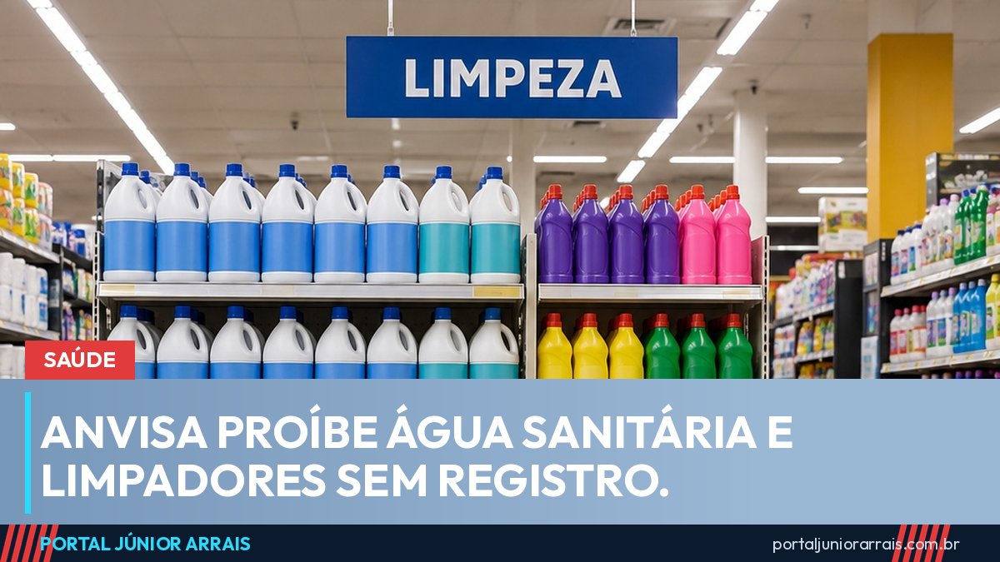

Anvisa proíbe água sanitária e limpadores sem registro e manda recolher gel íntimo falsificado

A Agência Nacional de Vigilância Sanitária (Anvisa) mandou tirar do mercado uma série de produtos de limpeza e de higiene. As medidas foram publicadas no Diário Oficial da União de sexta-feira, 2 de outubro, e atingem marcas de água sanitária, desinfetantes e limpadores, além de um gel íntimo falsificado que circulava em loja virtual.
Produto de limpeza sem registro não passa pelo controle que verifica concentração, embalagem e rotulagem. Água sanitária fora do padrão pode ser fraca demais para desinfetar ou forte demais para usar em casa com segurança.
Produtos de limpeza atingidos
- Água Sanitária Mult Jet e Desincrustante Ácido DX 1:40 Mult-Cap Mult Jet, da Ramos Indústria e Comércio de Materiais de Limpeza: fabricação e venda proibidas por estarem em desacordo com as exigências sanitárias;
- Bio Água Sanitária Biojet e Bio Lavanda Limpador de Uso Geral Biojet, da Biojet Indústria de Produtos Químicos: venda proibida por falta de regularização;
- Todos os saneantes da LGR Indústria e Comércio de Produtos de Limpeza: fabricação, venda e distribuição suspensas depois de inspeção feita entre 14 e 18 de setembro, que apontou descumprimento das boas práticas de fabricação. Os produtos Medicpro Zime, Medicpro Zime Ultra e Lapzyme devem ser recolhidos;
- Saneantes da BR Mega Limp: apreensão determinada por ausência de registro.
Higiene e cosméticos
- Hidrafemme Gel Hidratante Intravaginal, lote 2 2511006: recolhimento determinado depois que a própria fabricante, a Helianto Farmacêutica, encontrou unidades vendidas em plataforma de comércio eletrônico com características diferentes da embalagem original. O lote não pode ser vendido nem usado;
- Perspirex Strong Antitranspirante Axilar, lotes 614323 e 614326: apreensão determinada porque a empresa dona da marca, a Megalabs, afirma não ter fabricado esses lotes;
- Removedor de cola MAV C-22 e cola GhostBond XL, usados em mega hair e prótese capilar: proibidos por serem feitos por fabricantes desconhecidos.
O que fazer se você comprou
Quem tem em casa um dos produtos ou lotes da lista deve parar de usar. Em caso de irritação na pele, nos olhos ou nas mucosas depois do uso, a orientação é buscar atendimento de saúde levando a embalagem. Para pedir troca ou reembolso, guarde a nota fiscal ou o comprovante da compra.
Na hora de comprar, desconfie de preço muito abaixo do normal, de embalagem sem número de registro ou notificação na Anvisa e de produto de higiene íntima vendido por anúncio sem identificação do vendedor.
Cuidado com golpe
Alerta sanitário também vira isca. Desconfie de mensagem que pede dados pessoais ou Pix para "confirmar o reembolso do produto recolhido" ou que manda baixar aplicativo para "consultar o lote". A Anvisa não cobra nada do consumidor nem pede senha por aplicativo de mensagem. Se a loja se recusar a trocar o produto ou devolver o dinheiro, procure um profissional de sua confiança ou o órgão de defesa do consumidor da sua cidade.
Conteúdo informativo — não substitui orientação individualizada sobre o seu caso.
Júnior Arrais · Editor do Portal Júnior Arrais
Comunicador de Ubá (MG). Escreve todos os dias sobre benefícios sociais, INSS, trabalho e economia do dia a dia, a partir do Diário Oficial, de portarias e de fontes oficiais, em linguagem simples. Conheça a linha editorial e a política de correções do portal.